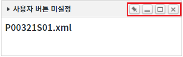
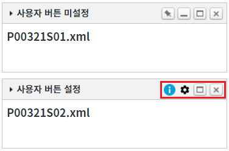
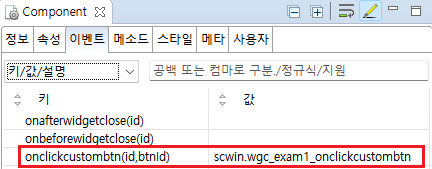

WidgetContainer의 'addWidgets' 메소드를 사용하여 위젯을 추가할 때, 위젯에 사용자 버튼과 기능 버튼을 설정한 예제입니다. 'addWidgets' 메소드의 첫 번째 인자의 위젯 옵션 'buttonFormatter' 속성을 사용하여 구현할 수 있습니다.
위젯 추가 시 우측 상단에 사용자 버튼 설정하기
1
STEP 1: 초기 상태를 확인합니다.
WidgetContainer에 위젯 옵션 'buttonFormatter' 속성이 지정되지 않은 기본 형식의 위젯이 추가되어있습니다.
Image 1.브라우저(Chrome) 실행 예시

2
STEP 2: 사용자 버튼을 정의하여 위젯 추가하기
'위젯 추가하기 - 우측 상단에 사용자 버튼 설정' 버튼을 클릭합니다.3
STEP 3: 실행된 결과를 확인합니다.
위젯의 타이틀이 '사용자 버튼 설정'인 위젯이 추가됩니다. 위젯의 우측 상단에 사용자 버튼 2개와 기능 버튼 '최대화'와 '닫기'가 표시됩니다.
Image 2.브라우저(Chrome) 실행 예시

1
STEP 1: CSS class 정의하기
'addWidgets' 메소드의 인자 위젯 옵션의 'buttonFormatter' 속성에서 사용할 class 명은 다음과 같습니다.
P00321_w2widget_btnInfo
P00321_w2widget_btnSetting
css 파일에 아래의 예시를 참고하여 class를 정의합니다. (class명의 중복을 피하기 위해 상위 element의 class명 'w2widget_title_buttons'을 함께 사용하였습니다.)
Example 1.CSS
/* '[프로젝트]/css/example.css'에서 확인할 수 있습니다. */ /* P00321.xml 우측 상단의 사용자 버튼 class 정의 */ .w2widget_title_buttons > .P00321_w2widget_btnInfo{position: relative; width: 19px; height: 17px; cursor: pointer; background: url('/img/icon_info.png') center 50%/15px 15px no-repeat;} .w2widget_title_buttons > .P00321_w2widget_btnSetting{position: relative; width: 17px; height: 17px; cursor: pointer; background: url('/img/btn_sub_setting.png') center 50%/15px 15px no-repeat;}
2
STEP 2: 위젯 옵션에 사용자 버튼 지정하기
WidgetContainer의 'addWidgets' 메소드를 사용하여 스크립트를 작성합니다. 'addWidgets' 메소드의 첫 번째 인자에 위젯 정보가 담긴 JSON을 정의합니다. 첫 번째 인자 위젯 옵션의 'buttonFormatter' 속성에 메소드 객체 또는 메소드명을 지정합니다. 지정한 메소드에서는 우측 상단 영역에 구성할 버튼의 정보가 담긴 배열을 반환합니다. 세부 스크립트는 아래의 예시에 작성되어 있습니다.
Example 2.Script
// 위젯 생성 옵션 정보 var widgetOptions = {}; /** * [필수] 위젯의 우측 상단의 기능 버튼들의 설정을 반환할 메소드 또는 메소드의 이름 * @param {string} argWidgetID Widget의 Runtime ID */ widgetOptions.buttonFormatter = function (argWidgetID) { // 우측 상단에 출력할 버튼의 정보를 Array로 반환합니다. // 사용자 버튼 2개와 기능 버튼 '최대화', '닫기'를 배치합니다. return [ { 'id': 'btn_info', // 버튼의 ID. WidgetContainer의 이벤트 'onclickcustombtn' 핸들러에서 ID로 구분하여 로직을 구성합니다. 'className': 'P00321_w2widget_btnInfo', // 버튼의 class. 정의한 class는 '[프로젝트]/css/example.css'에서 확인할 수 있습니다. 'isCustom': true // 사용자 버튼 여부 }, { 'id': 'btn_setting', // 버튼의 ID. WidgetContainer의 이벤트 'onclickcustombtn' 핸들러에서 ID로 구분하여 로직을 구성합니다. 'className': 'P00321_w2widget_btnSetting', // 버튼의 class. 정의한 class는 '[프로젝트]/css/example.css'에서 확인할 수 있습니다. 'isCustom': true // 사용자 버튼 여부 }, { 'useDefault': 'maximize' // '최대화' 버튼 사용. (위젯 기본 기능 버튼 지정. 'fix': 고정, 'minimize': 최소화, 'maximize': 최대화, 'close': 닫기) }, { 'useDefault': 'close' // '닫기' 버튼 사용 (위젯 기본 기능 버튼 지정. 'fix': 고정, 'minimize': 최소화, 'maximize': 최대화, 'close': 닫기) } ]; }; // [필수] 위젯 ID. 동일한 ID를 가진 위젯이 있으면 추가되지 않습니다. widgetOptions.id = "wg_exam2"; // [필수] 위젯 파일 경로 widgetOptions.src = "/page/P00321S02.xml"; // [필수] scope 적용 여부로 true 고정 widgetOptions.scope = true; // [필수] 위젯 너비 : (설정 값 / WidgetContainer의 속성 'col'의 설정 값 * 100)으로 '%'단위로 그려집니다. widgetOptions.unitWidth = 1; // [필수] 위젯 높이 : (설정 값 * WidgetContainer의 속성 'unitHeightPixel'의 설정 값)으로 'px'단위로 그려집니다. widgetOptions.unitHeight = 5; // [권장] 위젯 타이틀 widgetOptions.title = "사용자 버튼 설정"; // 위젯의 x 위치 widgetOptions.x = 0; // 위젯의 y 위치 widgetOptions.y = 6; // WidgetContainer 'wgc_exam1'에 위젯 1개를 추가합니다. wgc_exam1.addWidgets(widgetOptions);
3
STEP 3: 사용자 버튼의 클릭 이벤트 핸들러 정의하기
WidgetContainer의 'onclickcustombtn' 이벤트에 핸들러를 정의합니다. 핸들러에서는 위젯의 Runtime ID와 버튼의 ID를 파라미터로 받을 수 있습니다. 세부 스크립트는 아래의 예시에 작성되어 있습니다.
Example 3.Script
/** * WidgetContainer 'wgc_exam1'의 이벤트 'onclickcustombtn' 핸들러. * 우측 상단의 사용자 정의 버튼 클릭 시 호출. * ('addWidgets' 메소드의 인자 위젯 옵션의 'buttonFormatter' 속성에 정의 한 메소드에서 반환한 사용자 버튼) * @param {string} id Widget의 Runtime ID * @param {string} btnId 우측 상단의 사용자 버튼의 ID */ scwin.wgc_exam1_onclickcustombtn = function (id, btnId) { switch (btnId) { case "btn_info": alert("정보 버튼 클릭"); break; case "btn_setting": alert("설정 버튼 클릭"); break; default: break; } };
Image 3.웹스퀘어 스튜디오의 Component View의 이벤트 탭 예시

Example 4.Source
<!-- widgetContainer 의 소스 본문 예시 --> <w2:widgetContainer ev:onclickcustombtn="scwin.wgc_exam1_onclickcustombtn" id="wgc_exam1"> </w2:widgetContainer>
addWidgets( option )
option.buttonFormatter
onclickcustombtn